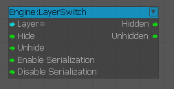
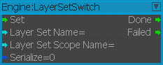
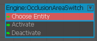
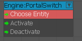
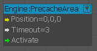
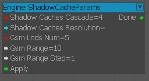
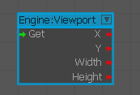

LayerSwitch
Activate/Deactivate objects in the layer.

Inputs
| Port | Type | Description |
|---|---|---|
| Layer | String | Name of the layer |
| Hide | Any | Hides objects in the layer |
| Unhide | Any | Shows objects in the layer |
| EnableSerialization | Any | Enables objects in the layer |
| DisableSerialization | Any | Disables objects in the layer |
Outputs
| Port | Type | Description |
|---|---|---|
| Hidden | Any | Triggered if hidden |
| Unhidden | Any | Triggered if visible |
LayerSetSwitch
This node lets you change the visibility of multiple layers at once, allowing for better organization of layers that belong together, and simpler Flow Graph structures to perform such layer switches. Visibility of layers can optionally be limited to a given scope.

Inputs
| Port | Type | Description |
|---|---|---|
| Set | Void | Trigger to perform the layer set switch. |
| Layer Set Name | String | Allows the user to select, from a dropdown list, which layer visibility preset should be applied to that scope. |
| Layer Set Scope Name | String | Allows the user to select, from a dropdown list, which layer visibility preset should be used to define the scope. If a scope is not applicable, leave this field empty. |
| Serialize | Int (as Boolean) | Specifies whether calls to this node need to be serialized. |
Outputs
| Port | Type | Description |
|---|---|---|
| Done | Void | Triggers upon completion of the layer switch. |
| Failed | Void | Triggers upon failure. This might occur, for instance, when the selected Layer Set cannot be found. |
OcclusionAreaSwitch
Used to switch the OcclusionArea on or off.

Inputs
| Port | Type | Description |
|---|---|---|
| Activate | Any | Activates the OcclusionArea switch |
| Deactivate | Any | Deactivates the OcclusionArea switch |
PortalSwitch
Used to switch the portal on or off.

Inputs
| Port | Type | Description |
|---|---|---|
| Activate | Any | Activates the portal switch |
| Deactivate | Any | Deactivates the portal switch |
PrecacheArea
Precache area at a specified position.

Inputs
| Port | Type | Description |
|---|---|---|
| Position | Vec3 | Location of the area to be precached |
| Timeout | Float | Timeout interval in seconds |
| Activate | Any | Activates the node |
ShadowChacheParams
Used to specify the shadow cache parameters.

Viewport
Gets current rendering viewport information.

Inputs
| Port | Type | Description |
|---|---|---|
| Get | Any | Gets the current viewport information |
Outputs
| Port | Type | Description |
|---|---|---|
| x | Integer | Outputs the top left X position of the viewport |
| y | Integer | Outputs the top left Y position of the viewport |
| width | Integer | Outputs the width of the viewport |
| height | Integer | Outputs the height of the viewport |
Deprecated Nodes
- Engine:MaterialParam
- Engine:OceanSwitch
- Engine:PortalSwitch
- Engine:PrecacheArea
- Engine:SetObjectMaterial
- Engine:SkyboxSwitch
- Engine:Viewport